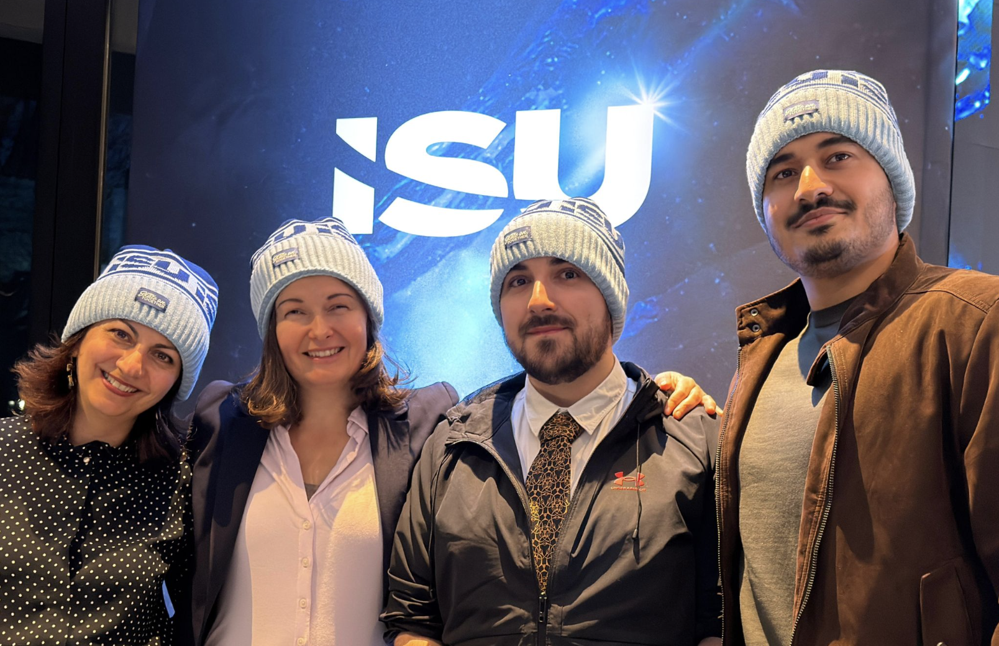

Formerly LWS
Institute of Applied Data Science & AI
Bridging the gap between academic research and industry application. We transform complex data into actionable intelligence for astronomy, energy, and sustainable agriculture.
Current Research & Projects
Pioneering solutions in Deep Learning and Retrieval-Augmented Generation.

Project EAGLE
Deep Learning approach to photovoltaics reliability. Utilizing multispectral imaging (UV, IR, Visible) and Vision Transformers to detect cell-level failures automatically.

Project PRONTO
Predicting potato sprouting to optimize tuber storage. Analyzing electrophysiological plant signals with ML to reduce chemical use and food waste.

Holzbau AI
Implementing computer vision for quality control and structural health monitoring in timber construction, ensuring the sustainability of modern wood-based architecture.

RAG for Nordic Optical Telescope
Implementing a Retrieval-Augmented Generation (RAG) system to allow astronomers to query complex observatory documentation and scientific logs using natural language.

BirdNet Classification
Advanced acoustic monitoring system using CNNs to identify bird species in Swiss alpine regions, supporting biodiversity conservation through automated data analysis.

STACK4FFHS
Moodle math expression assessment with Maxima parsing and feedback.

Graph Automorphism
Graph invariants and classification across graph classes.

SUVA 2
Deep learning methods for fraud detection in insurance data.

Multi-physics DED
Simulation and control platform for Direct Energy Deposition.
Trigger Homecare
Algorithms for chronically ill home care patient management.

Eisen-SNF
Optimization of oral iron supplementation in pregnancy.

RASPLAN
Machine learning for shallow landslide risk prediction.

SkillsFinder
Automatic skills extraction and profile validation platform.
Customs Engine
ML support for Swiss customs clearance plausibility checks.

TrEndS
Trends discovery and Students@Risk learning analytics tools.
NN-based PDE Solver
Neural approaches as alternatives to finite element analysis.

E-Assessment
Home-based AI-supported proctoring and exam monitoring.
SMAR-TI
Integrated smart city platform development for Ticino.
STACK4FFHS
LWS Archive Project
Stack4FFHS ist ein internes Lehrentwicklungsprojekt. Stack ist ein Moodle-Plugin, das es erlaubt, Aufgaben zu stellen, in denen die Studierenden als Antwort mathematische Ausdrücke und Formeln eingeben können.
Da die Darstellung einer Formel in der Regel nicht eindeutig ist, kann die Eingabe nicht einfach als Text überprüft werden; vielmehr wird sie mit Hilfe des Computeralgebrasystems Maxima geparst und überprüft und dann den Studierenden abhängig von der Lösung ein Feedback gegeben.
Im Rahmen des Projekts werden in Moodle Fragesammlungen erstellt mit Fragen zu den Themen Mathematikgrundlagen, Analysis, diskrete Mathematik und Lineare Algebra.
Projektdauer: Modular aufgebaut, mehrere Semester (Ressourcen abhängig)
Ansprechperson: Urs-Martin Künzi
Measure Based on Graph Automorphism
LWS Archive Project
Das LWS ist Projektpartner im Projekt «Measure Based on Graph Automorphism» von Matthias Dehmer von der FH Steyr.
Ziel des Projektes ist die Untersuchung von Invarianten auf Graphen, insbesondere von solchen, die durch Automorphismen definiert werden. Es wird untersucht, welche Beziehungen es zwischen verschiedenen Invarianten gibt und inwiefern diese Invarianten innerhalb gewisser Graphklassen Graphen eindeutig klassifizieren können.
Kontakt: Urs-Martin Künzi
Projektdauer: 1.2.19 - 30.9.2020
SUVA 2 (Dienstleistungsprojekt)
Deep Learning for Fraud Detection
Die Schweizerische Unfallversicherungsanstalt (SUVA) versucht vermehrt Methoden des Machine Learning zur Optimierung von Aufgaben in den unterschiedlichen Versicherungsabteilungen einzusetzen. Im Speziellen geht es in diesem Projekt um Betrugserkennung im Personenversicherungswesen mit Mitteln des Deep Learning.
Es handelt sich hier um eine Form der Erkennung von statistischen Ausreissern. Die Daten kennzeichnen sich durch eine hohe Dimensionalität (bis zu 1500 Merkmale) und einem hohen Grad an Klassenassymetrie (Betrugsdaten im Promillebereich). Nach Vorarbeiten mit traditionellen Methoden der Statistik und Machine Learning liegt der Schwerpunkt in diesem Projekt auf der Tauglichkeitsanalyse von überwachten (Deep Neural Nets, Generative Adversarial Networks) und unüberwachten (Autoencodervarianten und Boltzmann Maschinen) Methoden des Deep Learning.
Kontakt: Joachim Steinwendner
Projektdauer: 3 Monate
This project was made by Joachim Steinwendner.
Multi-physics Platform for DED
Additive Manufacturing Simulation
DED-In718 zielt auf die Realisierung einer Simulations- und Steuerungsplattform für die Additive Manufacturing (AM)-Technologie namens Direct Energy Deposition (DED) ab, die für Anwendungen mit der Legierung Inconel 718 optimiert ist.
Sie wird die Robustheit von DED verbessern, die Produktionskosten und die Zeit bis zur Markteinführung reduzieren, indem sie eine genaue Vorhersage der Geometrie von Inconel 718-Teilen zur Unterstützung der Prozessplanung und -steuerung durch die Integration von experimentellen Daten durchführt.
Methoden: Künstliche Intelligenz, CNNs, End-to-End Learning
Projektdauer: 1 Jahr
Kontakt: Martina Perani
This project was made by Beatrice Paoli and Ralf Jandl.
Trigger Tools & Algorithms in Homecare
Chronically Ill Patient Management
Das interne Projekt wird in Zusammenarbeit mit der Achse 6 (Social systems and public health) durchgeführt und zielt auf die Optimierung der Versorgung von chronisch kranken Patienten im Heimbereich ab.
Optimierung der oralen Eisen-Supplementierung
SNF Projekt - Schwangerschaftsmedizin
Im Projekt geht es um die Definition eines Dosierungsschemas mit maximaler Absorption und minimalen gastrointestinalen Nebenwirkungen.
Ziel ist das Studium von Nebenwirkungen bei der oralen Eisen-Supplementierung bei schwangeren Frauen. Das LWS trägt mit einer App zum Projekt bei, mithilfe derer die Frauen die Nebenwirkungen eintragen können.
Kontakt: Joachim Steinwendner, Diego Moretti
Dauer: April 2019 – März 2022
This project was made by Joachim Steinwendner.
IP-EE: RASPLAN
Landslide Risk Assessment
Ziel des Projekts ist die Entwicklung einer Technologie, die das Risiko von flachen Erdrutschen auf der Grundlage von numerischen Bodenmodellen und Wassersättigungskarten abschätzen kann.
Letztere werden aus einem spärlichen Netz automatisierter Sensoren für Bodenfeuchtigkeitsprofile und Datenverräumlichung durch Techniken des maschinellen Lernens gewonnen.
Methode: Machine Learning, Künstliche Intelligenz, Neuronale Netze
Projektdauer: 24 Monate
Ansprechperson: Martina Perani
This project was made by Beatrice Paoli and Ralf Jandl.
SkillsFinder
New platform for automatic skills extraction & profiles validation to identify talents
This is a joint project with the start-up company Skills Finder AG, funded by Innosuisse. The goal of the project is to build a platform for processing job application documents that automates the extraction of relevant information from candidates’ CVs and validates this information against candidates’ references and certificates. Our processing pipeline uses the latest advances in both document image processing and Natural Language Processing (NLP).
The first step in processing any document is to extract the text while taking the correct reading order into account. Since CVs have highly diverse layouts, none of the existing tools were able to extract the text correctly. To detect these complex layouts, we train a CV layout model using Deep Layout Parser, a unified toolkit for deep learning-based document image analysis.
The next step is an NLP component for information extraction. We use Named Entity Recognition (NER) with a pretrained multilingual BERT model, which we fine-tune on our dataset using custom labels.
The final step in our processing pipeline is information validation. We calculate semantic similarity between word phrases using output feature vectors from the BERT model and mean pooling.
Conference: https://www.youtube.com/watch?v=i7viysHUwcA
Presentation: Swiss Text Analytics Conference (SwissText) 2022
This project was carried out by Natasa Sarafijanovic-Djukic and Beatrice Paoli.
INNO-SBM: Customs Clearance Engine
Innocheque 2020 - Zollabfertigung Automation
Eine maschinelles Lernen Lösung, die in der Lage ist:
- • Die Plausibilität der Schweizer Zollabfertigungsnummern vorherzusagen und zu bewerten
- • Alle notwendigen Informationen im Zusammenhang mit diesen Zollabfertigungsnummern bereitzustellen
- • Gute Beschreibungen zur Klassifizierung zu nutzen
Projektdauer: 6 Monate
Ansprechperson: Beatrice Paoli
TrEndS: Trendsentdecker & Students@Risk
Learning Analytics & Student Success
Das TrEndS-Projekt ist eine Kooperation zwischen dem Laboratory for Web Science (LWS) und der MSc-Studiengangsleitung.
Es bietet die Möglichkeit einer systematischen Datenerfassung sowie -analyse, um die Potenziale des Studiengangs noch besser zu erkennen und entsprechende Massnahmen daraus abzuleiten. Dieses Projekt basiert auf den vorhandenen Datenbanken CAS Campus und Evento.
Machine Learning und Deep Learning-Algorithmen ermöglichen es künftig, automatisch Informationen aus Daten zu generieren. Das Daten-Analyse-Tool besteht aus:
- • Trendsentdecker - Analysieren von Studiengangtrends
- • Students@Risk - Früherkennung gefährdeter Studierender
Kontakt: Martina Perani
Dauer: 1.12.2018 - 29.2.2020
Neural Networks as FEA Alternative
Hasler Stiftung - Scientific Computing
Dieser Vorschlag zielt darauf ab, mit Hilfe einer neuartigen Technik zur Lösung partieller Differentialgleichungen (PDEs) auf der Basis neuronaler Netze Simulationen für industrielle Anwendungen zu ermöglichen.
Die jüngste Wiederbelebung dieser Methode in der wissenschaftlichen Literatur führte zu mehreren Veröffentlichungen zu diesem Thema, d.h. die Technik ist reif für einen Transfer in die angewandte Forschung als Alternative zur klassischen Finite Elements Analysis (FEA).
Projektdauer: 9 Monate
Ansprechperson: Urs-Martin Künzi
E-Assessment: AI-Proctored Exams
Intel Research - Home-Based Examination
Aufgrund des Coronavirus war die FFHS gezwungen, alle Lehrveranstaltungen online abzuhalten und die Prüfung des aktuellen Semesters sicherzustellen.
Deshalb wurde ein home-based Prüfungssystem getestet, um alle Prüfungen ohne Live-Proctoring online zu realisieren. Nach erfolgreichem Pilottest wurde beschlossen, alle Prüfungen mit Studierenden zu Hause durchzuführen und die Integration künstlicher Intelligenz in das Prüfungssystem zu testen.
Das Prüfungssystem basiert auf Videos vom Bildschirm und von den Testkandidaten, die zur Betrugsprävention kontrolliert werden. Kooperation mit der wissenschaftlichen Gemeinschaft der DACH-Fernuniversitäten.
Ansprechperson: Joachim Steinwendner
Projektdauer: 1 Jahr
SMAR-TI: Smart City Platform
Ticino Smart Region Development
SMAR-TI: Sviluppo di una piattaforma integrata Smart City per il Ticino zielt darauf ab, eine integrierte Plattform für die koordinierte Entwicklung aller Aktivitäten im Zusammenhang mit der Smart City und/oder Smart Region innerhalb der SUPSI und ihrer affiliierten Schulen zu schaffen und zu testen.
Dieses Instrument ermöglicht es, sich gegenüber den verschiedenen Akteuren als ein einziger Gesprächspartner zu präsentieren und die internen Kompetenzen innerhalb der Universität zu koordinieren, um dieses Thema auf integrierte, effiziente und wirksame Weise zu behandeln.
Projektdauer: 1 Jahr
Ansprechperson: Martina Perani / Beatrice Paoli
ADA Team Wins Big for Milano-Cortina 2026
Under the leadership of Dr. Danuta Paraficz, our team of brilliant students developed a groundbreaking application presented for the Olympic Winter Games. The project showcases our commitment to real-world AI impact on a global stage.
Read the full story →